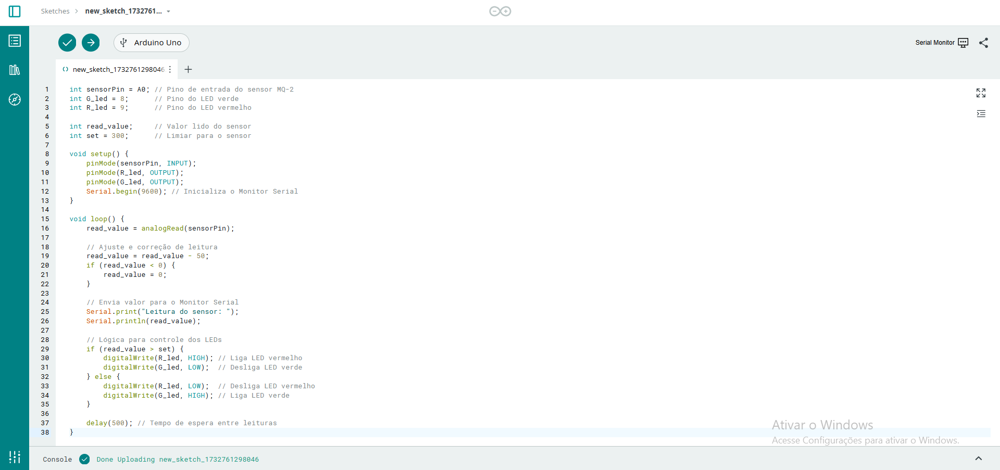
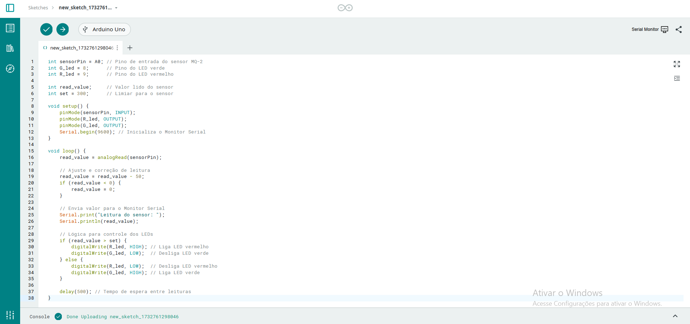

# 26956
SITE DA IRONHIDE
OBJETIVO
O projeto social "Sentinelas Verdes" tem como objetivo apoiar comunidades que enfrentam dificuldades ambientais devido à escassez de recursos e à falta de estudos na área. Utilizando módulos de pH e CO2, o projeto coleta e disponibiliza dados públicos para ajudar a enfrentar esses desafios. A iniciativa busca promover o bem-estar, a saúde e a qualidade de vida, além de estimular o desenvolvimento tecnológico e científico por meio de soluções acessíveis e sustentáveis.
PROBLEMÁTICA
O monitoramento da qualidade do ar e da água em comunidades vulneráveis é insuficiente, comprometendo tanto a saúde pública quanto o meio ambiente. A ausência de ferramentas acessíveis para avaliar indicadores como pH e CO2 impede a formulação de estratégias eficazes, evidenciando a importância de desenvolver soluções tecnológicas acessíveis e replicáveis para combater a degradação ambiental.
LOCAL DE REALIZAÇÃO
A equipe pretende iniciar as pesquisas na cidade de Cascavel (CE), uma região metropolitana que enfrenta baixo investimento em iniciativas e estudos voltados ao meio ambiente, um setor afetado pela crescente industrialização local. Além disso, a presença de três integrantes da equipe, Daniel, Erick e Thales, que residem na cidade, torna mais viável a implementação do projeto.
AÇÃO SOCIAL
Todo o projeto será compartilhado em escolas públicas de Cascavel (CE) por meio de palestras sobre conscientização ambiental e preservação dos ecossistemas. Consideramos essencial promover a conscientização, especialmente no ambiente educacional, abordando os temas centrais do projeto. Também buscamos difundir os valores da FIRST, a importância da robótica e a educação STEM, gerando um impacto positivo na comunidade escolar local.
ARDUÍNO
A plataforma principal para o desenvolvimento do sistema de monitoramento. O Arduíno será responsável por controlar os módulos sensores e processar os dados coletados em tempo real.
MÓDULO DE pH
O monitoramento da qualidade do ar e da água em comunidades vulneráveis é insuficiente, comprometendo tanto a saúde pública quanto o meio ambiente. A ausência de ferramentas acessíveis para avaliar indicadores como pH e CO2 impede a formulação de estratégias eficazes, evidenciando a importância de desenvolver soluções tecnológicas acessíveis e replicáveis para combater a degradação ambiental.
MÓDULO DE CO2
Utilizado para medir a concentração de dióxido de carbono no ar, ajudando a monitorar a poluição atmosférica e avaliar a qualidade do ar.
PLACA DE ENSAIO
A protoboard é uma placa de ensaio que serve como um protótipo de um aparelho eletrônico, com uma matriz de contatos que possibilita construir circuitos de teste sem que haja necessidade de solda e, assim, garantindo segurança e agilidade em diferentes atividades.
ESP32
Um microcontrolador de baixo custo e alta performance que será utilizado para conectar os sensores ao sistema de monitoramento remoto. Com capacidade de Wi-Fi e Bluetooth, ele possibilitará a transmissão dos dados coletados para uma plataforma online, como o Thingspeak.
GARRAFA PET
Utilizada de forma criativa e sustentável, a garrafa PET servirá como parte do suporte para os sensores e módulos, garantindo a proteção dos componentes eletrônicos e tornando o projeto mais acessível.
PROTÓTIPO VIRTUAL
O protótipo do projeto Sentinelas Verdes foi desenvolvido com foco em tecnologia e sustentabilidade. Utilizando o TinkerCAD, simulou-se a integração de sensores de CO2 e pH com o Arduino, resistores e placas de ensaio. O design estrutural, modelado no Fusion 360, foi baseado em garrafas PET, combinando sustentabilidade, facilidade de uso e um design industrial sofisticado. A escolha de materiais recicláveis e acessíveis torna o projeto escalável e replicável, promovendo impacto positivo e acessibilidade em diferentes contextos.
PROTÓTIPO FÍSICO
Inicialmente, a equipe projetou um circuito utilizando Arduíno e Módulo de CO, no qual realiza o monitoramento da quantidade de Monóxido de Carbono no ar. A equipe pretende futuramente realizar o design do projeto, realizando o monitoramento de pH e CO2 com as informações sendo atualizadas constantemente no nosso site.
 
